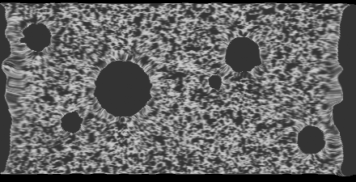
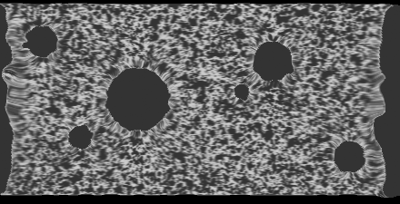

Chaque projection est issue de la transformation affine identifiée pour le trou. Ce sont des contraintes virtuelles. Les anciennes graines mesurees restent dans la fonction objectif.
{'weight': 0.1, 'material_correlation': 0.8372755691155246, 'crown_correlation': 0.6338246725252961, 'seed_position_rms_px': 1.8019207766906273, 'nonpositive_material_jacobians': 628}

{'weight': 1.0, 'material_correlation': 0.8367797859447946, 'crown_correlation': 0.6264469504518442, 'seed_position_rms_px': 1.8741947289572776, 'nonpositive_material_jacobians': 644}

{'weight': 10.0, 'material_correlation': 0.8366939505669089, 'crown_correlation': 0.6250737108684185, 'seed_position_rms_px': 1.8847513063274206, 'nonpositive_material_jacobians': 646}